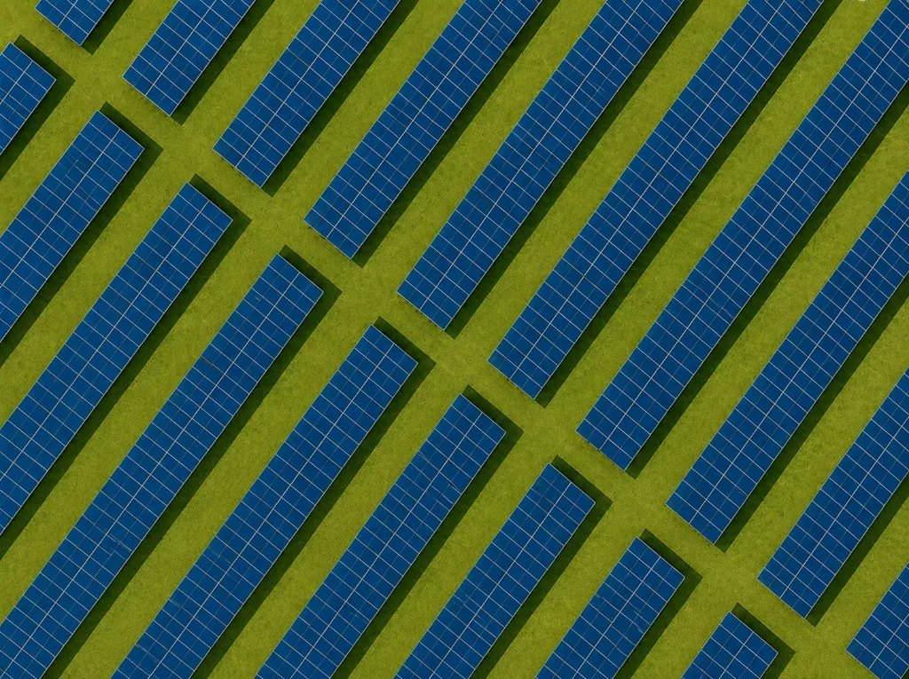
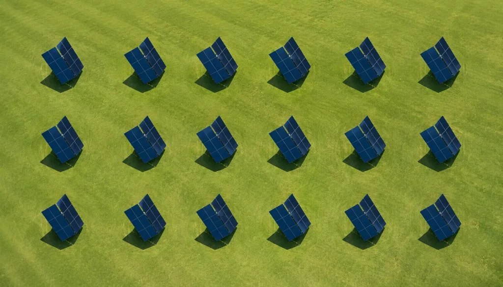
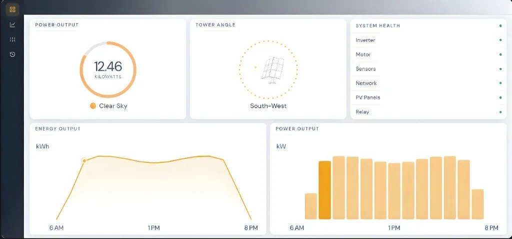

01
Manufacturing
Maximize megawatts per acre on active factory sites, without sacrificing roofs, yards, or uptime.

Janta Power builds vertically scaling, sun-tracking 3D solar towers for commercial, industrial and utility projects where land is at a premium.
Traditional solar sprawls sideways. Janta scales vertically, so the same site carries more generation and the ground underneath it stays in use. Janta publishes one worked comparison, a 500 kW site in Dallas: 3.3 acres of fixed-tilt panels making 876,000 kWh a year, against one acre of towers making 1,182,600. The figures below are that comparison multiplied out to a 50 MW build at Janta’s own ratio — our arithmetic, their numbers.


Industries and sites where land, uptime and power density are the constraint — and a tower is the only shape that fits.
Maximize megawatts per acre on active factory sites, without sacrificing roofs, yards, or uptime.
High-density power for distribution hubs on tight footprints. Truck lanes and staging yards stay clear.
Reliable, dense power beside uptime-critical facilities. More MW in less space, closer to the load.
Local, high-output power for fast chargers and fleet depots. Scale charging without sprawling ground arrays.
More generation where land cannot sprawl. Airport-grade density built for sites that never stop running.
Add solar without taking fields out of production. More energy per acre while ground stays open for crops and equipment.
Each tower reports its own output, angle and system health. Operators see the whole site in one place, and the towers track the sun without anyone walking the field.


Tell us the site and the load. We will come back with the footprint, the annual output and what the same project costs as a traditional array.